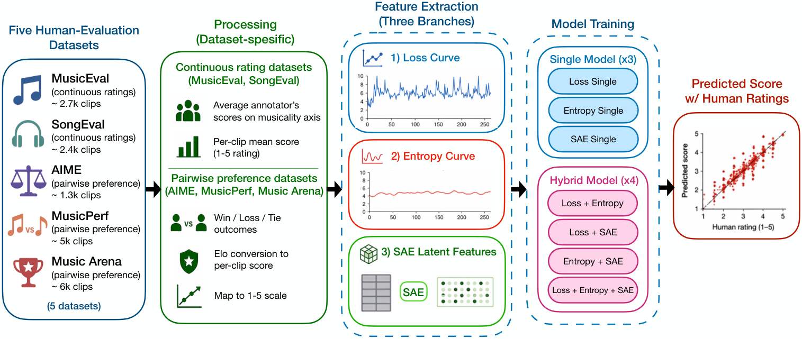
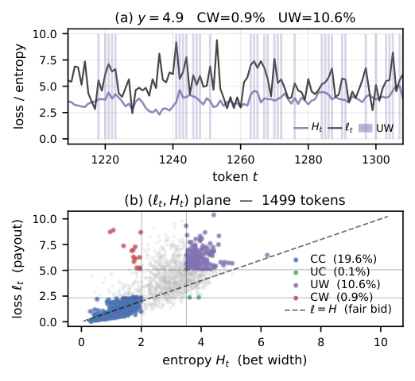
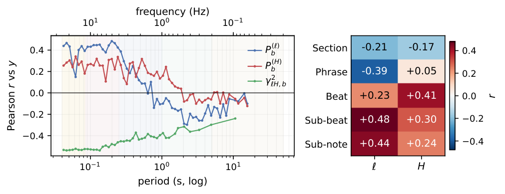

Can a music generation model judge how good its own output sounds to a human,
using only its intrinsic signals — without any external audio verifier?
We extract three signals from a single frozen MusicGen under teacher forcing —
per-token loss ℓt, next-token predictive entropy Ht, and
sparse-autoencoder (SAE) latents of the hidden states — and align them with human
ratings from five public benchmarks (MusicEval, SongEval, AIME, MusicPref, Music Arena).
A lightweight CNN on these curves rivals or beats audio-based aesthetics baselines,
without ever processing the raw audio.

Pipeline: human-rated audio → teacher-forced intrinsic curves (loss / entropy / SAE) → lightweight prediction model → correlation with human scores.
Prediction as a Wager
Following Huron's account of musical anticipation, each generation step is a wager:
entropy sets the bet width, loss is the payout. Crossing the two splits tokens into
four scenarios; the share of overconfident-wrong (CW: narrow bet, surprised) tokens is the
dominant local correlate of low ratings, while uncertain-wrong (UW: wide bet, still surprised)
tokens accompany high ratings.

Example clip (y=4.9): loss/entropy window with dense CW+UW co-occurrence, and the full-length (ℓt, Ht) wager plane.
Listen for yourself — the densest 2-second CW / UW windows from the MusicEval test split,
each with a blind Gemini-2.5-Flash caption (no labels or ratings shown to the model).
6/10 CW windows are audibly disruptive, vs. 3/10 for UW:
Overconfident-Wrong (CW) — the model bet narrow and was surprised
CW 01unusual-timbre
A sustained synth pad plays a chord with a slightly detuned or dissonant quality.
CW 02unusual-timbre
A high-pitched, sustained, and slightly detuned sound with a buzzing quality is heard.
CW 03ordinary
A sustained, high-pitched synth note with a slight vibrato is heard.
CW 04timbre-artefact
A sudden, high-pitched, almost glitchy sound occurs at the very beginning of the excerpt.
CW 05ordinary
A high-pitched, sustained synth note with a slight vibrato is heard.
CW 06ordinary
A high-pitched, sustained synth sound with a slight vibrato is heard.
CW 07novel-chord
A sudden, loud, and dissonant chord plays, clashing with the previous harmony.
CW 08timbre-artefact
A sudden, harsh digital noise or glitch occurs.
CW 09abrupt-cut
A female vocal sample is abruptly cut off mid-word.
CW 10ordinary
A high-pitched, sustained synth note plays over a bassline.
Uncertain-Wrong (UW) — the model bet wide and was still surprised
UW 01timbre-artefact
A sudden, loud, and distorted cymbal crash occurs, disrupting the flow.
UW 02unusual-timbre
A sudden, high-pitched, almost vocal-like sound briefly appears and then disappears.
UW 03ordinary
A male voice sings a phrase with a slight vibrato, accompanied by a simple, clean synth melody.
UW 04ordinary
A sustained, slightly detuned synth pad plays a consonant chord.
UW 05ordinary
A sustained, slightly detuned string note with a subtle vibrato is heard.
UW 06ordinary
A male voice sings a sustained note with a slight vibrato.
UW 07ordinary
A sustained, slightly detuned string note with a vibrato.
UW 08ordinary
A rhythmic synth arpeggio plays over a kick drum beat.
UW 09ordinary
A female voice sings a sustained note with a slight vibrato.
UW 10unusual-timbre
A high-pitched, percussive sound with a metallic quality occurs at the very end of the excerpt.
SAE Latents: Good vs. Bad vs. Neutral Concepts
Ranking SAE latents by rating-aligned gradient attribution ρk yields cleanly separable
detectors. For each latent: the blind Gemini-2.5-Flash caption (genre, mood — instruments, tempo,
aggregated over its top clips), the producer's verdict after listening, and the top-activating
2-s windows from two different clips. On the good side both agree on conventional musical content;
on the bad side the VLM still issues clean genre labels while the producer reaches for
distortion terms.
random percussion, harsh ambient, random high-freq sound
b-4 #1533
−0.48
pop, upbeat — vocals, drums, piano (122 bpm)
bad-quality vocal, noisy percussion
b-3
−0.48
— (silence)
EOS / delay tokens
silent latent — fires on EOS / delay tokens
b-2 #1724
−0.60
rock, energetic — drums, electric guitar, bass (140 bpm)
big noise, random trumpet
b-1 #1398
−0.61
classical, calm — synthesizer, drums, piano (120 bpm)
random high-freq noise, not a structured ensemble
Temporal–Spectral Structure
FFT band power of the loss/entropy curves correlates with ratings in rate-specific ways:
rapid phrase-rate change reads as formal instability (r≈−0.39);
beat-rate variation aligns with groove (r≈+0.41/+0.48);
millisecond-grain ℓ–H coupling is the spectral signature of glitchy audio (r≈−0.54).

Citation
@inproceedings{li2026meva,
title = {Do Music Generative Models Understand Musicality? Automatic Music Evaluation with Model-Intrinsic Signals},
author = {Li, Xiaosha and Liu, Chun and Wang, Ziyu},
booktitle = {Proc. of the 27th Int. Society for Music Information Retrieval Conf. (ISMIR)},
year = {2026}
}